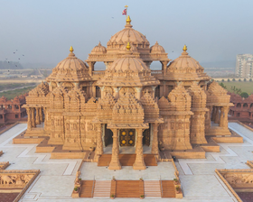
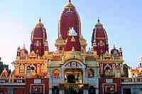
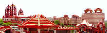
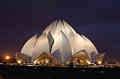
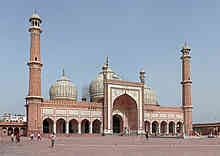
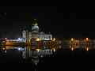
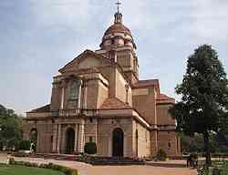
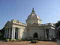

|
|
Places of worship

Akshardham Temple
Akshardham is a Hindu temple complex in Delhi, India. Also referred to as Delhi Akshardham or Swaminarayan Akshardham, the complex displays millennia of traditional Hindu and Indian culture, spirituality, and architecture. The building was inspired and developed by Pramukh Swami Maharaj, the spiritual head of the Bochasanwasi Shri Akshar Purushottam Swaminarayan Sanstha, whose 3,000 volunteers helped 7,000 artisans construct Akshardham. The temple, which attracts approximately 70 percent of all tourists who visit Delhi, was officially opened on 6 November 2005. It sits near the banks of the Yamuna adjacent to the 2010 Commonwealth Games village in eastern New Delhi. The temple, at the center of the complex, was built according to the Vastu Shastra and Pancharatra Shastra. In addition to the large central temple crafted entirely of stone, the complex features exhibitions on incidents from the life of Swaminarayan and the history of India, an IMAX feature on the early life of Swaminarayan as the teenage yogi, Nilkanth, a musical fountain on the message of the Upanishads, and large landscaped gardens. The temple is named after a belief in Swaminarayan Hinduism.

Laxminarayan Temple
Also known as the Birla Temple, it is ideally located in central Delhi (Mandir Marg). This temple dedicated to 'Lakshmi' (goddess of wealth) and 'Lord Narayana' (the preserver) was built in 1938 by the prominent Indian industrialist Raja Baldev Das Birla and inaugurated by Mahatma Gandhi. The temple, built in Orissan style, has a large number of idols representing various hindu deities. It welcomes people of all faiths. The temple is also known for its excellent sculptured panels, wall paintings and frescoes done by master artists from Jaipur, Rajasthan.Adjacent to the temple is 'Geeta Bhavan' where a magnificent statue of Lord Krishna and beautiful paintings depicting the epic of Mahabharata are seen. A temple dedicated to Lord Buddha and wall paintings depicting his life and teachings is also located around the central structure of Birla Mandir. A guest house, a library and a reading room also form a part of the temple.

ISKCON Temple
Built on a hilly place in 1998, the ISKCON Temple is a complex of temples. Dedicated to Lord Krishna, this elegant temple is one of the largest temple complexes in India. It has a large number of Hare-Rama Hare-Krishna followers.

Bahai Temple
The temple represents the Bahai faith which is broad in its outlook, scientific in the influence it exerts on the hearts and minds of men. It signifies the purity and the universality of the lord and equality of all religions. Visited by over four million people, annually, this gleaming lotus- like marble structure is located on Bahapur Hills (South Delhi) and it is the seventh and most recent Bahai houses of worship in the world. The temple is a must visit for every tourist who comes to Delhi. This structure, completed in 1986, is a marvel of modern architecture. Set amidst pools and gardens, the view of the temple is very spectacular just before dusk when the temple is flood lit. Anyone is free to visit the temple and pray or meditate silently according to their own religion. The temple is around 45 minutes from Domestic Airport.

Jama Masjid
Built by Shah Jahan in 1658, it is one of the largest mosques in India with a seating capacity of more than 20,000. The mosque is situated near the Red Fort in old Delhi. This is the area that still retains the traditional charm of markets in Mughal times. The bulbous domes and tapering minarets built with marble stand strong and beautiful even to this day. This mosque has three gateways, four angle towers and two 40 m. high minarets. You can even go to the top of minarets and have a bird's eye view of Delhi.

Gurdwara Bangla Sahib
Gurdwara Bangla Sahib is the most prominent Sikh gurdwara in Delhi. It is instantly recognisable by its stunning golden dome and tall flagpole.

Cathedral Church of Redemption
Cathedral Church of the Redemption also known as Viceroy Church, is among the most beautiful and magnificent churches in India. The church is located east of Parliament House in New Delhi and Rashtrapati Bhavan which was used by then British Viceroy. The Church resembles the shape of a birthday cake with a candle placed on top. The Church derives its name from Palladio's Church of Il Redentore in Veniceas well as Lutyens St Jude's Church, Hampstead Garden Suburb. The Cathedral Church of the Redemption India, is a part of the Delhi diocese of the Church of North India (CNI).

St. James' Church
Located very close to Kashmere Gate in north Delhi, St. James Church is the oldest church in the capital. It was built by James Skinner and consecrated in 1836. It is built in the Western classical design with a Greek cross plan. Three of the arms of the cross have porticoes, while the eastern arm contains the altar. The central areas is covered by a magnificent dome. This church is open only on Sundays.
go to top
Home
Developed by SUGATO CHAKRABORTY (currently pursuing B.Tech in CSE from West Bengal University of Technology, developer at Boscom Software,2014)
|
|